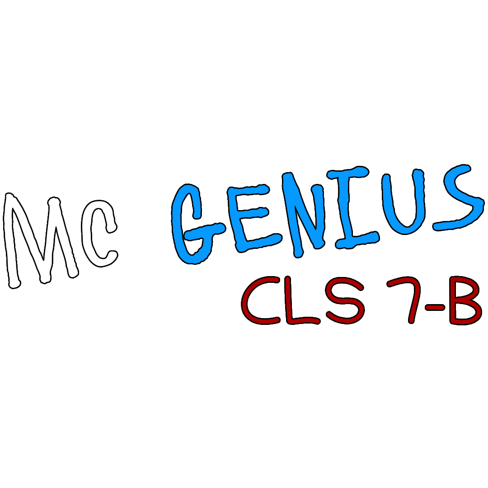

Quiz Cultural General
1. Ce compozitor german, deși și-a pierdut auzul, a scris „Simfonia a 9-a”?
2. Ce regină a Egiptului Antic a fost cunoscută pentru relațiile cu Cezar și Antoniu?
3. Ce filozof grec a fondat școala „Lyceum”?
4. Ce pasăre își poate roti capul până la 270°?
5. Ce animal are cea mai mare greutate corporală?
6. Ce insectă poate ridica de 50 de ori propria greutate?
7. Ce formațiuni montane subacvatice se formează când plăcile tectonice se separă?
8. Care este cel mai adânc punct de pe Pământ?
9. Care este cel mai mare deșert, deși nu e acoperit de nisip?
10. Ce țară este faimoasă pentru pizza?
11. În ce țară se dansează flamenco?
12. Ce țară sărbătorește „Ziua Morților”?
13. Cine a înfăptuit prima unire a Principatelor Române?
14. Care domnitor a fost supranumit „Întemeietorul”?
15. Unde s-a declanșat Revoluția industrială?